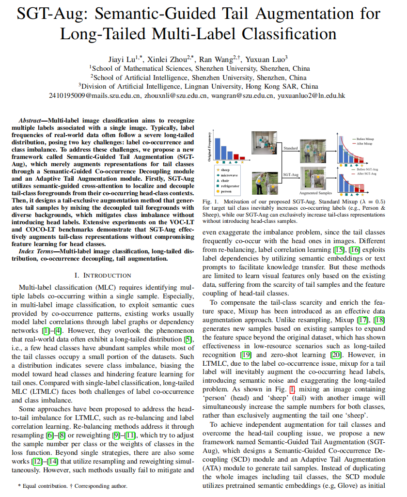
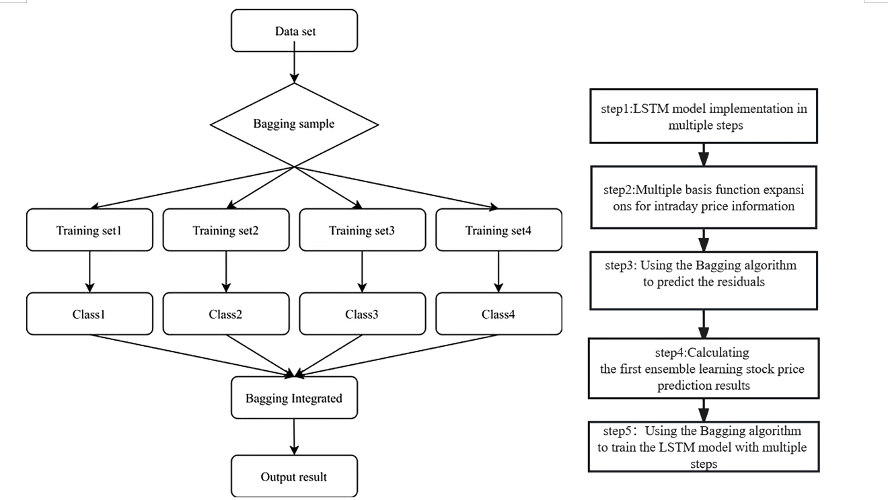
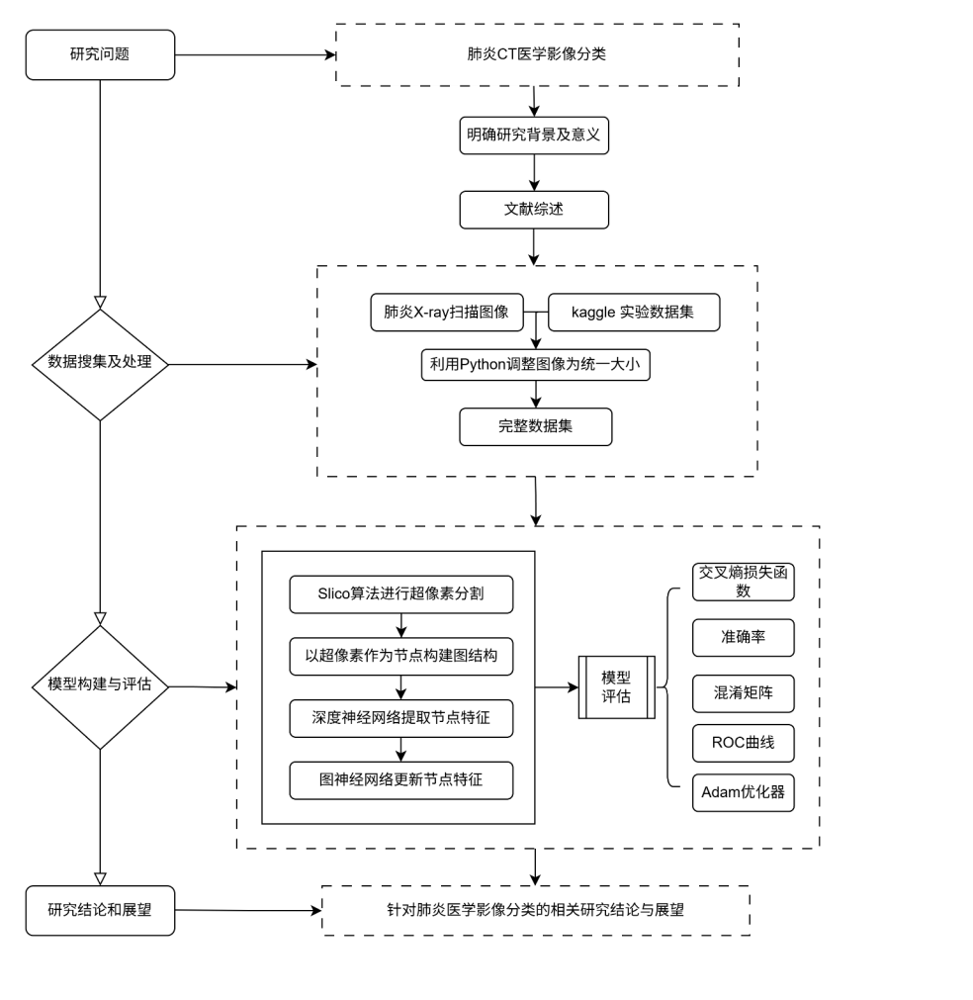
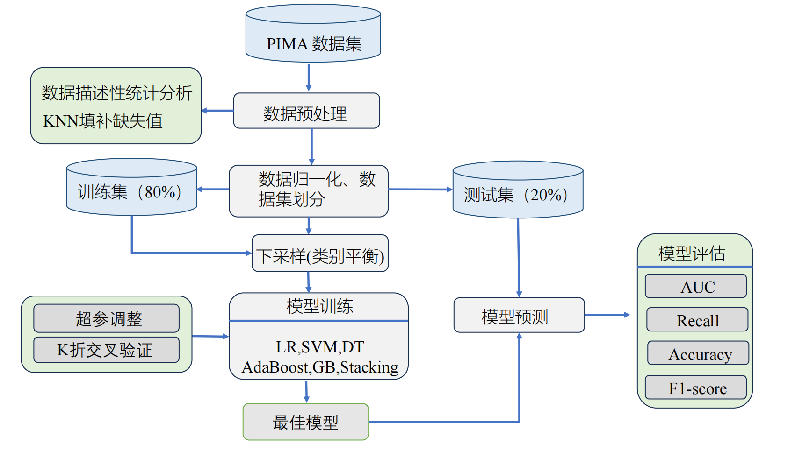

Applied Statistics / AI Product
Hi, I'm Jiayi Lu. I turn data into decisions, products, and the occasional aha.
M.S. in Applied Statistics, Shenzhen University · AI Apps / Data Science
Bridging statistical intuition with LLM / Agent capabilities into production-ready products.
About
A person who stitches data and products together.
I'm Jiayi Lu, an M.S. in Applied Statistics at Shenzhen University, recruiting for Fall 2027. My B.S. was in Building Environment & Energy Engineering; the pivot to statistics and AI in grad school wasn't an accident — I keep returning to the same idea: use statistical intuition to bound the problem, then hand it off to LLMs / Agents to scale.
I work across two tracks — AI Apps and Data Science: SlayQuiz (an AI-powered quiz mini-program, full 0→1 product loop), Strategem (a multi-Agent decision-intelligence platform for energy-storage / virtual-power-plant scenarios), while interning at CICC Wealth's Strategy & Digital Center, working on 600K+ prospect records — profiling, attribution, and A/B experiments.
Research: first-author on an ICME 2026 (CCF-B) paper (SGT-Aug, long-tailed multi-label classification) and a CPCI conference paper (Bagging-ensemble time-series forecasting). Led a team to 3rd prize in the Guangdong regional track of the National Statistical Modeling Contest.
Three questions I keep asking on every project: What's the business problem behind this number? Where are the model's limits? Who's affected when this ships? The site follows the standard portfolio layout — 02 Experience · 03 Projects · 04 Skills — to mirror the résumé.
Experience
Latest internship · reverse-chronological.
-
2026.05 – 2026.09 Intern
Data Analytics Intern @ CICC Wealth · Strategy & Digital Center · Data & AI Agile Team
Profiling & data foundation: processed 600K+ prospect records (80+ business fields) in Python and built a five-dimension prospect-profile framework; established a 7-dimension, 1000+ tag hierarchy as the canonical data layer for precision targeting and the customer-insight agent.
Channel conversion & attribution: analyzed 18 online channels' acquisition efficiency; funnel-matrix analysis isolated 3 critical drop-off points across 6 core channels (peak drop-off ~50%). Attribution analysis surfaced the dominant churn drivers. Proposed a contribution-vs-efficiency 2×2 to reallocate channel budgets and optimize outreach.
Modeling & experiment design: logistic regression + random forest to surface conversion drivers; clustering for prospect segmentation; two-sample hypothesis tests to compare conversion across reach strategies at the same drop-off cohort; designed a stratified A/B framework for differentiated-policy testing.
Selected Work
6 projects that best show what I can do.
-

Fig. 1 — t-SNE & Class ActivationP / 01SGT-Aug · Semantics-Guided Data Augmentation for Long-Tailed Multi-Label Classification · ICME 2026 (CCF-B) · 1st author
Use a pretrained Transformer to guide ResNet toward tail-class-relevant foreground regions, then synthesize augmentations for low-shot classes.
Problem: in long-tailed multi-label image classification, tail classes are sparse and visually weak — naive training tends to "squeeze them out".
Approach: ResNet50 backbone + pretrained Transformer for semantic–vision interaction, localizing tail-class-relevant foreground regions. Augmentation is built on those localizations to ease the long-tail imbalance without amplifying it.
Training & validation: Linux + PyTorch with single-node multi-GPU DataParallel. Systematic comparison and ablations on VOC-LT / COCO-LT, combined with standard classification losses, outperform several long-tailed multi-label baselines.
-
P / 02
SlayQuiz · AI-Powered Quiz WeChat Mini-Program
Owned the full lifecycle from research and competitive analysis to design and full-stack implementation — a product that generates its own questions and self-corrects.
Full-stack + product core: WeChat mini-program built with Taro + TypeScript, backed by a FastAPI server powering job creation, question generation, answer logging, result analysis, and knowledge-base management.
AI generation pipeline: question & feedback pipeline via LangChain + DeepSeek with four guardrails — JD validation, web-search augmentation, structured output, and rule-based sanity checks — making both generation and feedback noticeably more stable.
RAG private knowledge base: parses PDF / Word / URLs, chunks and embeds with DashScope Embedding, stores in Qdrant, and isolates namespaces per user for personalized practice. Adds a learning loop: mistake notebook, spaced repetition, variant questions, KB drills, adaptive difficulty + XP rewards.
AI dev tools: VSCode / Claude Code / MCP / Agent Skills for spec breakdown, solution validation, implementation, and test-fix cycles.
-
P / 03
Strategem · Multi-Agent Decision-Intelligence Platform
For energy-storage / virtual-power-plant digital-energy scenarios — turning industry research from "reading reports" into a runnable pipeline.
Multi-Agent research workflow: Planner → Research → Analysis → Financial → Verification on FastAPI + LangGraph + Next.js. Decomposes a user query into a research plan, sub-questions, a retrieval plan, and a structured outline — automating both industry research and report generation.
Dual-source retrieval & evidence binding: Source + Router + RAG dual-channel retrieval; claims are structured-bound to evidence, slashing hallucination. Industry terms / value chains / metric definitions are packaged as configurable domain knowledge injected into the agents — covering industry positioning, policy & market, competitive landscape, and tech chains with on-demand depth.
Hallucination control: citation chains + an audit layer that auto-handles dangling citations, uncovered modules, low-credibility sources, duplicate evidence, and pending verifications.
-

P / 04Ensemble Learning for Time-Series Forecasting · CPCI · 1st author
Financial time series are highly nonlinear and noisy — a single LSTM is unstable. The paper boosts robustness with a Bagging + LSTM ensemble.
Feature engineering: EDA on historical stock data to surface open / close / volume signals and craft multi-dimensional features; Fourier and B-spline basis functions for smoothing and feature mapping.
Core model: TensorFlow-based LSTM capturing long-range dependencies.
Ensemble & validation: Bagging constructs diversified training subsets, training multiple LSTMs in parallel. Across multiple forecast horizons, prediction error is significantly lower than the single-LSTM baseline.
-

P / 05Chest X-Ray Intelligent Recognition & Statistical Modeling · National Statistical Modeling Contest · Team Lead
CNN for local texture + GNN for inter-region relations — pneumonia classification on chest X-rays.
Problem: lesion regions are scattered; local-texture-only models miss spatial-relation cues.
Approach: build a region adjacency graph via SLICO superpixel segmentation, extract per-node features with CNN, then model inter-region relations with GNN — a joint local + relational representation.
Results: systematic experiments & evaluation lifted headline metrics to 92% accuracy, 91.5% sensitivity, 99.5% AUC; as team lead, owned the technical roadmap, experimental design, and coordination.
-

P / 06Diabetes Prediction via a Stacking-Ensemble Framework · PIMA · Stacking Ensemble
Stacking LR / SVM / CART with AdaBoost / GBDT — pushed PIMA AUC to 0.96.
Preprocessing: KNN imputation for missing values, then random undersampling to address class imbalance; 80/20 train-test split, with numerical features normalized.
Base learners + boosting: Logistic Regression, SVM, and CART as base classifiers; CART further wrapped into AdaBoost and Gradient Boosting ensembles.
Stacking + hyperparam search: 5-fold cross-validation with Bayesian optimization (Optuna). The fused Stacking model hit AUC 0.96 / Recall 0.84 / Accuracy 0.89 — a 10.3-point AUC lift over the logistic-regression baseline.
Skills
Four buckets: AI Apps / ML / Data Analytics / Engineering & Certs.
AI Apps & Engineering
- LangChain · LangGraph · Agent / multi-Agent orchestration
- RAG · Embedding · vector search (Qdrant / pgvector)
- FastAPI · Docker · Postgres
- Claude / DeepSeek · Prompting · tool-use
- Claude Code / Codex / MCP / Agent Skills for development
Machine Learning & Deep Learning
- PyTorch · TensorFlow (CCF-B / CPCI first-author)
- CNN · GNN · ResNet · Transformer
- LSTM · time-series modeling · Bagging ensembles
- Random forest / clustering / hypothesis testing / regression
- Single-node multi-GPU DataParallel training
Data Analytics & Experiments
- Python · pandas / NumPy / scipy
- SQL · complex queries / window functions / 600K+ prospects in production
- Funnel analysis · attribution · stratified A/B experiments
- 5-dimension user profiling / 1000+ tag taxonomy
- R (coursework)
Certifications & Other
- CDA Data Analyst · Level I & II
- CDGA Data Governance Engineer
- CET-6 · 537
- Ranked 3 / 20 · First-class scholarship
- CPC member · age 23